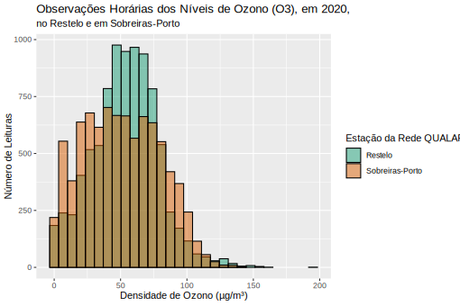

Diogo Correia - 99211
Projeto Computacional - Probabilidade e Estatística
Pergunta 3
library("openxlsx")
library("dplyr")
library("tidyr")
library("ggplot2")
df <- read.xlsx(xlsxFile = "QualidadeARO3.xlsx", sheet = 1) %>%
type.convert(as.is = TRUE) %>%
pivot_longer(names(.), names_to = "station", values_to = "o3_level") %>%
filter(station %in% c("Sobreiras-Porto", "Restelo"))
df %>%
ggplot(aes(x = o3_level, fill = station)) +
geom_histogram(position = "identity", colour = "black", alpha = 0.5) +
scale_fill_brewer(palette = "Dark2") +
xlab("Densidade de Ozono (µg/m³)") +
ylab("Número de Leituras") +
labs(fill = "Estação da Rede QUALAR", subtitle = "no Restelo e em Sobreiras-Porto") +
ggtitle("Observações Horárias dos Níveis de Ozono (O3), em 2020,")

Em Sobreiras-Porto registou-se uma maior variância dos níveis de ozono, em relação às leituras no Restelo.
Ambas as estações apresentam o centro da distribuição perto de 50 µg/m³.